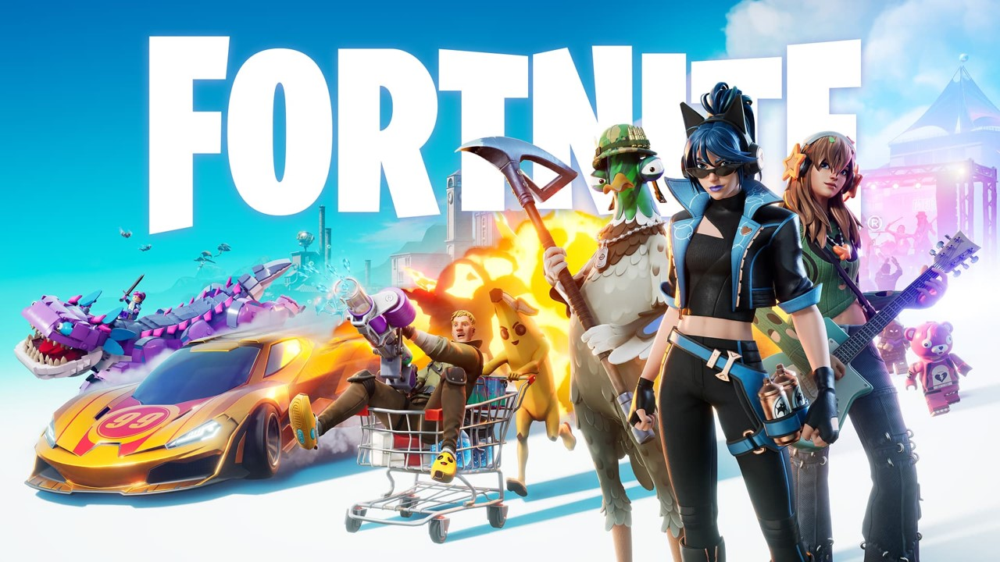

Consolidação de Conhecimentos
"Uma rede não conecta apenas máquinas — ela conecta ideias, pessoas e possibilidades infinitas"
Uma rede de computadores é um conjunto de dispositivos interconectados por meios de transmissão, utilizando serviços e regras para compartilhar recursos e informações.
Cabos de Par Trançado (UTP) e Coaxiais. Transmitem dados via impulsos elétricos.
Fios de vidro ou plástico. Transmitem dados através de pulsos de luz.
Ondas de rádio e micro-ondas. Wi-Fi, Bluetooth e Celulares (4G/5G).
O que usamos na rede:
Como a comunicação ocorre:
Redes de alcance muito curto, geralmente para conectar dispositivos pessoais próximos ao usuário (ex: fones Bluetooth, smartwatches).
Redes locais restritas a um espaço geográfico limitado, como uma casa, um andar de escritório ou um prédio (ex: Rede Wi-Fi de casa, laboratório da faculdade).
Redes que abrangem uma área metropolitana ou cidade inteira. Utilizadas por provedores para interligar bairros e sedes de grandes empresas.
Redes de longa distância, cobrindo países ou continentes. A maior e mais famosa WAN existente é a própria Internet global.
Todos os nós (hosts) da rede são conectados individualmente a um dispositivo centralizador (como um Switch).
É o padrão absoluto e mais moderno para a construção de redes locais (LANs) cabeadas hoje.
Todos os computadores compartilham um único cabo principal de comunicação (o Backbone).
Foi um modelo histórico com alta taxa de colisão de dados. Se o cabo principal romper, a rede inteira cai.
Os equipamentos são conectados formando um círculo lógico fechado, onde os dados fluem em uma única direção.
Foi popularizada antigamente com o Token Ring, onde uma "ficha" passava de máquina em máquina para permitir a comunicação.
Foco total em alta redundância. Dispositivos se conectam simultaneamente a múltiplos outros caminhos.
É muito comum na Internet (roteamento tolerante a falhas) e em Redes Sem Fio inteligentes (Sistemas Wi-Fi Mesh residenciais).
Prepare-se para testar seus conhecimentos
O Hub é considerado um equipamento inteligente, pois conhece o endereço MAC de cada dispositivo e entrega os dados diretamente ao destino.
O Switch opera de forma mais eficiente que o Hub, pois evita o envio por broadcast para todos os portos.
O Roteador tem como função principal interligar redes diferentes e determinar a melhor rota para os pacotes.
Uma VLAN permite que vários departamentos compartilhem o mesmo switch físico, mantendo-se isolados de forma lógica.
Na arquitetura Ponto a Ponto, existe um servidor central que controla todos os recursos da rede.
A topologia em Anel possui a vantagem de que, se um cabo ou nó falhar, o restante da rede continua funcionando normalmente.
A topologia em Estrela concentra todos os dispositivos em um ponto central; se o switch central falhar, a rede inteira para.
A MAN abrange uma área geográfica maior que a WAN e é utilizada para interligar países e continentes.
A SAN é uma rede dedicada e de altíssima velocidade, utilizada exclusivamente para armazenamento.
A topologia em Malha (Mesh) é considerada altamente resiliente, pois possui múltiplos caminhos entre os nós.
O Projeto Nômade Digital levanta a pergunta sobre como a comunicação Ponto a Ponto e redes locais poderiam funcionar caso a infraestrutura global de internet caísse.
Cerca de 70% do tráfego intercontinental de dados trafega por cabos submarinos; o restante utiliza satélites.
No padrão de cabeamento Ethernet, são utilizados apenas 4 dos 8 fios existentes no cabo para transmissão e recepção de dados.
No padrão T568B, a ordem dos fios começa com Branco-Verde e Verde nos pinos 1 e 2.
Um cabo direto (straight-through) utiliza padrões diferentes nas duas pontas e serve para conectar dois equipamentos do mesmo tipo (PC com PC).
Um cabo cruzado (crossover) possui uma ponta no padrão T568A e a outra em T568B, invertendo os pares de transmissão e recepção.
Para conectar um PC diretamente a um Switch, deve-se utilizar um cabo cruzado.
A ARPANET surgiu em 1983 como primeira rede comercial da Internet.
O protocolo TCP/IP foi adotado como padrão da ARPANET em 1983, permitindo comunicação entre redes distintas.
A World Wide Web (WWW) foi criada em 1989 por Tim Berners-Lee e corresponde ao mesmo conceito que a Internet.
A prática de reconhecimento de rede (Operação FANS) permite desconectar cabos e acessar fisicamente os equipamentos para análise.
No laboratório com Packet Tracer, ao construir uma rede com topologia em Estrela, os PCs são conectados diretamente ao Switch.
O padrão T568B é o mais amplamente adotado na indústria atualmente.

🎮 O jogo não funciona de forma direta entre os jogadores. Todos se conectam a servidores centrais da Epic Games, que gerenciam as partidas, os dados e tudo o que acontece no jogo.
📱 Os jogadores não se conectam uns aos outros diretamente (como no P2P). Seu celular/computador é apenas o cliente que envia comandos e recebe a informação do servidor central.
⚠️ Se os servidores da Epic caírem, ninguém consegue jogar — isso é a marca do modelo Cliente-Servidor.
| Modelo | Característica | Fortnite |
|---|---|---|
| Cliente-Servidor | Existe um servidor central que controla tudo | ✅ SIM |
| P2P | Os dispositivos se conectam diretamente, sem intermediário | ❌ Não |
Cenário 1: Quando você usa o aplicativo do banco no celular para ver seu saldo.
Cenário 2: Quando você baixa um arquivo por um programa de torrent, recebendo pedaços do arquivo de várias pessoas ao mesmo tempo.
Cenário 3: Quando um funcionário envia um documento para a impressora do escritório, que é controlada por um servidor.
Cenário 4: Quando você conecta seu fone de ouvido Bluetooth no seu smartphone para ouvir música.
Cenário 5: Quando você acessa a página inicial do Google.
Cenário 6: Quando você usa um programa para transferir fotos diretamente do seu computador para o computador de um amigo, sem usar um servidor.
Cenário 7: Quando você joga um jogo online como Fortnite com centenas de outros jogadores.
Cenário 8: Quando você faz uma chamada de vídeo direta com um amigo usando um aplicativo.
Cenário 9: A rede de um hospital onde os prontuários dos pacientes são salvos em um computador central para que os médicos possam acessá-los de qualquer sala.
Cenário 10: Dois computadores em uma sala de aula que se conectam apenas entre si para compartilhar um trabalho de grupo.
Operação FANS
🛠️ Desafio Final: Aplicar tudo o que vimos construindo e configurando uma topologia em Estrela do zero.
🔍 Reconhecimento: Praticar o mapeamento físico e lógico sem impactar a rede de produção.
💻 Mão na Massa: Liguem os computadores, abram o simulador e vamos projetar nossa infraestrutura!
Prepare-se para o Quiz de Revisão